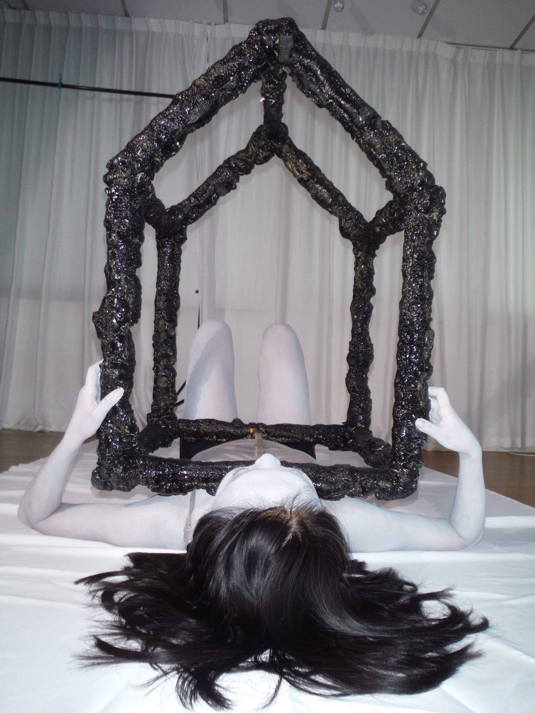

2022
digital photographs — model - ZiYue
pulse of the hacker presents an artefact of a fictitious deity borne out of the digital realm. Using metaphorical imagery of human anatomy and technology devices, the deity is imagined in response to the perceived obscurity of the digital landscape and the omnipresent use of algorithms signalling as its rituals.
